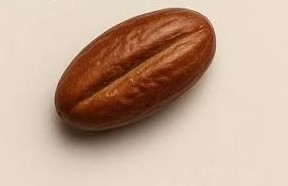

LENGUAJE HTML
HTML es un lenguaje de MARCADO, que nos sirve
para dar estructura y contenido a nuestras páginas web.

3 imagenes con su descripción.
HTML es un lenguaje de MARCADO, que nos sirve
para dar estructura y contenido a nuestras páginas web.

SENATI es la institución líder en educación técnica superior en el Perú,
enfocada en la formación práctica y tecnológica para el sector industrial.
Su reconocido sistema dual permite a los estudiantes aprender directamente
dentro de empresas reales, garantizando una rápida inserción al mercado laboral.

Es símbolo de fe y resistencia. Hablada en muchas ocasiones en los
tiempos de Moises y josue, en la biblia.
Que de una pequeña semilla de datilera nace un árbol que nunca se dobla,
así es la fe que resiste los vientos.